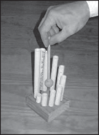
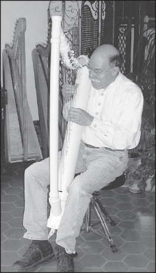

Read the article about an inventor named John Kovac. Then answer the questions that follow.
Musical Plumbing
by Laura Biggs
1 When plumbing makes funny noises, it’s not always a good
sign. But John Kovac, a harpist from Virginia, likes the pipes to sing. He thinks plumbing pipes make good musical instruments.
2 Kovac has made standard harps out of wood for more than 20 years. He says he feels a special thrill when
he creates an instrument with his hands and uses it to make music come alive. But it takes years of training and special tools to make a traditional musical instrument. Kovac wanted to share the joy of making instruments with people who might not have the time or money to do it. So he decided to find an easier way.
3 Plumbing was the answer. Kovac found PVC pipes at a local hardware store. PVC stands for polyvinyl chloride. It’s the white tubing that many plumbers use. You might find it in your house under a sink or in the basement.
4 Kovac says that PVC pipes are great for making instruments because they are inexpensive, come in many shapes and sizes, and fit together perfectly.
5 Kovac makes harps, guitars, violins, and cellos out of PVC pipes. He
also makes uncommon instruments like the udu (a curved drum) from Nigeria, the cuíca (a friction drum) from Brazil, and the Rührtrommel (a stir drum) from Germany.
6 His instruments may look as if they come from outer space, but they really work. He and some of his music students and friends even started a band called the East Coast PVC Band.

When Kovac “stirs” the mallet around this Rührtrommel, it makes a clip- clopping sound.
7 Sally Seabright is a violin teacher who plays PVC violin with the band. At first, the rounded shape of the PVC violin made it difficult to hold between her chin and shoulder, but Kovac modified the violin by adding a piece that fits perfectly under her chin.
8 That kind of adaptability is what Kovac admires about PVC. He says, “I know it’s not easy for the average person to make a musical instrument, but I hope to enable anyone who has ever dreamed of making a violin, harp, or guitar to fulfill his or her dreams.”
9 So if you think making an instrument sounds like fun, try using PVC pipes or other household
materials to experiment with different sounds and creations. You could even call a few friends and form your own band! With homemade instruments, you, too, can make the pipes sing.

John Kovac plays his PVC harp.
“Musical Plumbing” by Laura Biggs, from Highlights for Children (February 2010). Copyright © 2010 by Highlights for Children, Inc. Text and photographs reprinted by permission of Highlights for Children.